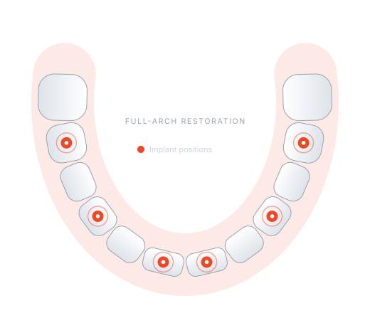

Zirkonzahn
Precision milling for zirconia frameworks and full-arch prostheses.
ProTec Dental Laboratory partners with clinicians on All-on-X (AOX) implant restorations — from photogrammetry and case planning through to precision-milled, hand-finished final prostheses.

From simple cases to extremely complex restorations, clinicians rely on our experience with AOX workflows. We adapt to the way you work and keep up with the latest innovations from the major implant companies.
Partnering with dental professionals to deliver precise, predictable restorations — and outstanding patient care.
Screw-retained full-arch prostheses on four or more implants, designed around your plan and milled for a passive fit.
Learn moreAccurate digital implant position capture with PIC and iMetric cameras, available at your request.
Learn morePre-surgical planning, smile design and alternative treatment paths so the result lands close to plan.
Learn moreSingle and multi-unit implant restorations. We work with all major implant companies.
Learn moreCAD/CAM-milled zirconia crowns and bridges, finished by hand for natural aesthetics.
Learn moreSend intraoral scans and photogrammetry data digitally — we’ll work within the workflow you already use.
Learn moreAdvanced CAD/CAM workflows bridge the gap between digital treatment planning and the physical restoration — for consistent fit and streamlined turnaround.
Precision milling for zirconia frameworks and full-arch prostheses.
Reliable dental milling for crowns, bridges and provisional restorations.
Milling capacity for zirconia restorations, keeping turnaround consistent.
Digital or analogue, we fit around the workflow you already have.
Send an intraoral scan, photogrammetry file or physical impressions — whatever suits your clinic.
Use our online case form or your scanner’s lab portal, with your Rx and any photos.
We share the digital design for your approval before anything is milled.
Your restoration is milled in-house, hand-finished, checked and returned.
A selection of recent restorations. [Add case photos to assets/img/gallery/ — with patient consent]
“Example testimonial — replace this with a real quote from a clinician you work with, about fit, communication or turnaround.”
Talk it through with our technicians before surgery, or send your records and we’ll take it from there.